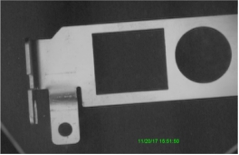

图形数组生成工具将输入的数据按照对应的索引值显示输出。其应用效果如图1所示。

| 分类 | 参数名称 | 参数描述 |
|---|---|---|
| 属性窗口 | 数据类型 | 选择输入数据的数据类型。 |
| 自动清空 | 控制是否清空输出数组，如果清空数组，每次运行工具都会将输出数组中的数据清空。 | |
| 图像窗口 | 无 | 无 |
| 数据链 | 输入数据 | 输入形成图形数组的数据，类型可选。 |
| 输入数据索引 | 输入数据索引，int类型；如果输入数据为sc2Vector类型，那么输出数据将是sc2Vector类型的数组，输入数据索引就是将输入数据写入到输出数组位置的索引。 |
| 高级界面 | 无 | 无 |
| 分类 | 参数名称 | 参数描述 |
|---|---|---|
| 监视窗口 | 输出数组 | 输出形成的图形数组。 |
| 执行结果 | 工具执行结果。 | |
| 执行时间 | 工具执行时间。 | |
| 图像窗口 | 输出数组 | 显示形成的图形数组，同监视窗口的输出数据参数。 |
| 执行结果 | 显示工具执行结果，执行成功显示“OK”，执行失败显示“NG”，同监视窗口的执行结果参数。 | |
| 数据链 | 输出数组 | 输出形成的图形数组，同监视窗口的输出数据参数。即将输入数据按索引位置写入后的生成的图形数组，大小不定，随着写入索引而改变。 |
数据类型选择时，需同输入数据的数据类型相同，可选的数据类型如表1所示。
表1 数据类型
| 数据类型 | 说明 | 数据类型 | 说明 |
|---|---|---|---|
| GsTextDisplayParam | 文本显示数组工具输出的输出数组类型。 | Sc2Vector | 二维向量。 |
| scCaliperTwoEdgeResult | 双边卡尺工具输出结果类型。 | scCircle | 圆形。找圆，圆拟合等工具的输出类型。 |
| scCaliperOneEdgeResult | 单边卡尺工具输出结果类型。 | scLine | 直线。找线，线拟合等工具的输出类型。 |
| GsMultiCLOutputResult | 多圆多线定位工具输出的搜索结果类型。 |
参见“\Samples\图形数组生成工具.gvp”。